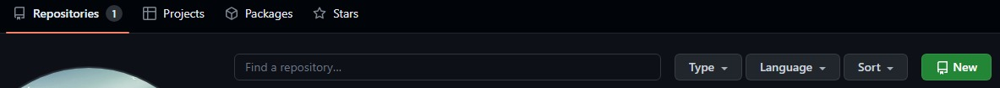
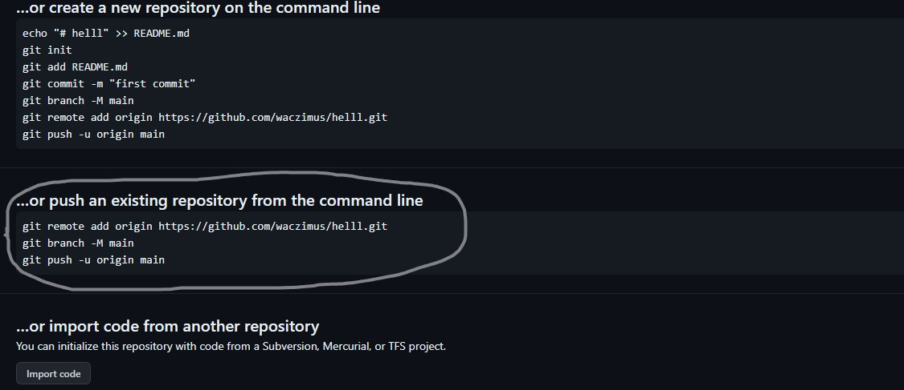
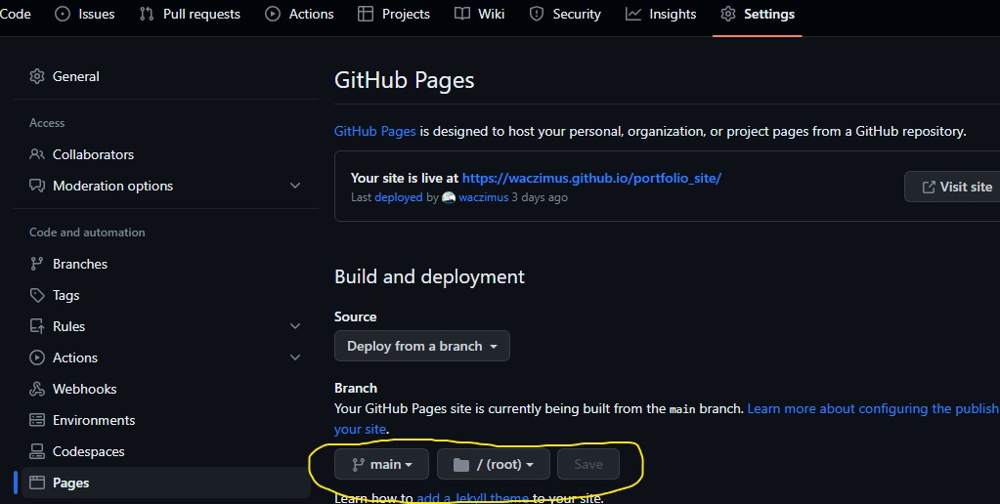

Welcome to the first module of the fab-lab i.e. the web designing module.
This module mostly taught me the front end of a website using languages such as HTML,css and Javascript.
So let's get started, There are references attached of different websites so you can just visit them.
Links are represented by green color.
About HTML:
HTML (Hypertext Markup Language) was created by Tim Berners-Lee in 1991 as a standard for creating web pages. It's a markup language used to structure content on the web, defining elements like headings, paragraphs, links, and images. HTML forms the backbone of web content. In layman's terms, HTML is like the skeleton of a website. It's a set of instructions that tells a web browser how to display text, images, videos, and other elements on a webpage. Think of it as the building blocks that create the structure and look of a website, similar to how bricks and mortar are used to build a house. In a nutshell:
- HTML is the language of the web, used to create websites.
- HTML defines the barebone structure or layout of web pages that we see on the Internet.
- HTML consists of a set of tags contained within an HTML document, and the associated files typically have either a ".html" or ".htm" extension
- There are several versions of HTML, with HTML5 being the most recent version.
- It is platform-independent. For example, Chrome displays the same pages identically across different operating systems such as Mac, Linux, and Windows.
- Images, videos, and audio can be added to a web page
- HTML is a markup language and not a programming language.
- It can be integrated with other languages like CSS, JavaScript, etc. to show interactive web pages
About CSS:
CSS (Cascading Style Sheets) was created by Håkon Wium Lie to allow web designers to change their website's layout, colours, and fonts. Originally, websites were meant to be used by researchers only, so the decoration did not matter. However, the need to make them look nice grew when websites became widespread
- Used to style and layout webpages
- Used to style and layout webpages
- Reusability of the same rules for multiple HTML documents.
- The style definitions are normally saved in external .css files. With an external stylesheet file, you can change the look of an entire website by changing just one file!
About JS:
JavaScript is a high-level programming language that follows the ECMAScript standard. It was originally designed as a scripting language for websites but became widely adopted as a general-purpose programming language, and is currently the most popular programming language in use. JavaScript is usually found running in a web browser as interactive or automated content, ranging from popup messages and live clocks to large web applications. JavaScript is also commonly used in server-side programming through platforms like Node.js, or "embedded" in non-JavaScript applications where the base programming language lacks the high-level functionality that JavaScript offers.
JavaScript is typically inserted into HTML when used on the web, either directly in the file in an HTML tag, or linked to a separate file containing the script.
- Numbers are written with or without decimals
- Strings are text, written within double or single quotes
- JavaScript uses the keywords var, let and const to declare variables.
- JavaScript uses arithmetic operators ( + - * / ) to compute values
How I made my website:
This website that I made uses HTML, CSS and to some extent Javascript. The very first version is still on github under the commit hello.
HTML can be written using notepad only with .html or .htm extension for this module i used VScode (visualstudio). It has many tools to customize code and easily manage it.
.png "vscode viewport")
The above screenshot shows the viewport of the vscode. It is a text editor so it can be used to write code efficently for every programming language. Visual Studio Code highlights keywords in your code in different colors to help you easily identify coding patterns and learn faster.
It Code gives you suggestions to complete lines of code and quick fixes for common mistakes. You can also use the debugger in VS Code to step through each line of code and understand what is happening.
You can change the look and feel of VS Code by picking your favorite fonts and icons and choosing from hundreds of color themes.
The homepage of the website is named index.html or index.htm for the browser to understand that it the first page it must show to the client. As mentioned above in the "About HTML" section, the basic syntax is same for all. In the head section the metadata is added ,but if you are using vs code boiler plate it is automatically added to it.
Then after writing the html code the css is to be written to style page as mentioned in the "About CSS" section.
.png)
The above image is my local folder on my pc. This contains all my data about this website, the images i used, different html pages, stylesheet, javascript file, etc. Now if I keep this folder on my pc only I can access this website, but I want to make it so that you can access it too. Therefore I need something to host this on. For this I used github pages.
Github is an internet hosting service that uses Git, a version control system, to store, track, manage, and collaborate on software development projects. It offers various features like access control, bug tracking, task management, continuous integration, and wikis for every project.
For a more detailed course on git you can go to this w3schools course: Click Here

Git uses commands to upload the files from my local folder to git repository. For that you need to create a new repository on git.
Some of the most used commands are in the following sequence.
- git config user.name "name"
- git config user.email "email"
- git init
- git add file_name
- git status
- git commit -m"message"
- git push
.png "github viewport")
Process to Upload to Github
- Click on new repository button in repository section to create a new repository.
- Name your new repo and click on create repository.
- You will see the following window.
- Now open your git terminal using git bash in your folder and type the following commands,
- git init
- git add -A
- git commit -m"message"
- Now after these commands copy the highlighted commands from the above image in git terminal.
- You will be asked to login in some cases, after that close the window and you have repository on github.
- To get a page you have to navigate to settings and then pages.
- Focus on highlted part by me in the above image.
- Select main (or the branch your code is on) ,then root and then save it. Your page will be live and you can see the link to your page.



All the code for this website is available on my github so you can just visit that.